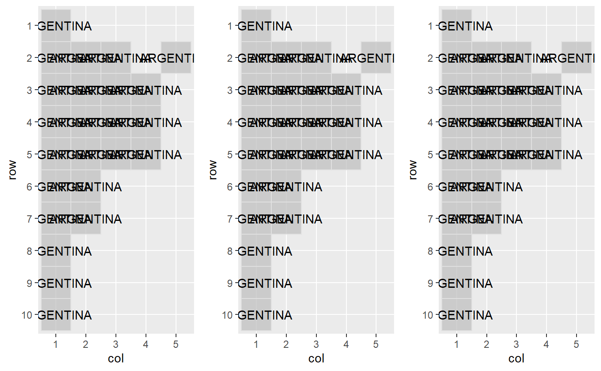

library(geofaceteAR) #> Loading required package: geofacet #> Registered S3 method overwritten by 'geofacet': #> method from #> +.gg ggplot2 library(patchwork)
En el siguiente ejemplo podemos ver disintas opciones de código para las provincias de Argentina
# CODIGOS DE INDRA argentina_indra <- get_grid("ARGENTINA") %>% recode_district(type = "indra") argentina_indra #> col row code name #> 1 1 1 10 JUJUY #> 2 3 2 09 FORMOSA #> 3 5 2 14 MISIONES #> 4 1 2 17 SALTA #> 5 2 2 23 TUCUMAN #> 6 1 3 03 CATAMARCA #> 7 3 3 06 CHACO #> 8 4 3 05 CORRIENTES #> 9 2 3 22 SANTIAGO DEL ESTERO #> 10 2 4 04 CORDOBA #> 11 4 4 08 ENTRE RIOS #> 12 1 4 12 LA RIOJA #> 13 3 4 21 SANTA FE #> 14 3 5 02 BUENOS AIRES #> 15 4 5 01 CABA #> 16 1 5 18 SAN JUAN #> 17 2 5 19 SAN LUIS #> 18 2 6 11 LA PAMPA #> 19 1 6 13 MENDOZA #> 20 1 7 15 NEUQUEN #> 21 2 7 16 RIO NEGRO #> 22 1 8 07 CHUBUT #> 23 1 9 20 SANTA CRUZ #> 24 1 10 24 TIERRA DEL FUEGO # CODIGOS ISO argentina_iso <- get_grid("ARGENTINA") %>% recode_district(type = "iso") argentina_iso #> col row code name #> 1 1 1 AR-C JUJUY #> 2 3 2 AR-B FORMOSA #> 3 5 2 AR-K MISIONES #> 4 1 2 AR-X SALTA #> 5 2 2 AR-W TUCUMAN #> 6 1 3 AR-H CATAMARCA #> 7 3 3 AR-U CHACO #> 8 4 3 AR-E CORRIENTES #> 9 2 3 AR-P SANTIAGO DEL ESTERO #> 10 2 4 AR-Y CORDOBA #> 11 4 4 AR-L ENTRE RIOS #> 12 1 4 AR-F LA RIOJA #> 13 3 4 AR-M SANTA FE #> 14 3 5 AR-N BUENOS AIRES #> 15 4 5 AR-Q CABA #> 16 1 5 AR-R SAN JUAN #> 17 2 5 AR-A SAN LUIS #> 18 2 6 AR-J LA PAMPA #> 19 1 6 AR-D MENDOZA #> 20 1 7 AR-Z NEUQUEN #> 21 2 7 AR-S RIO NEGRO #> 22 1 8 AR-G CHUBUT #> 23 1 9 AR-T SANTA CRUZ #> 24 1 10 AR-V TIERRA DEL FUEGO # CODIGOS DE INDEC (POR DEFECTO) argentina_indec <- get_grid("ARGENTINA") %>% recode_district(type = "indec") argentina_indec #> col row code name #> 1 1 1 02 JUJUY #> 2 3 2 06 FORMOSA #> 3 5 2 10 MISIONES #> 4 1 2 14 SALTA #> 5 2 2 18 TUCUMAN #> 6 1 3 22 CATAMARCA #> 7 3 3 26 CHACO #> 8 4 3 30 CORRIENTES #> 9 2 3 34 SANTIAGO DEL ESTERO #> 10 2 4 38 CORDOBA #> 11 4 4 42 ENTRE RIOS #> 12 1 4 46 LA RIOJA #> 13 3 4 50 SANTA FE #> 14 3 5 54 BUENOS AIRES #> 15 4 5 58 CABA #> 16 1 5 62 SAN JUAN #> 17 2 5 66 SAN LUIS #> 18 2 6 70 LA PAMPA #> 19 1 6 74 MENDOZA #> 20 1 7 78 NEUQUEN #> 21 2 7 82 RIO NEGRO #> 22 1 8 86 CHUBUT #> 23 1 9 90 SANTA CRUZ #> 24 1 10 94 TIERRA DEL FUEGO
Estos códigos sirven para linkear la base de datos que estemos uzando con la grilla seleccionada en un gráfico de haciendo facet con la función facet_geode . Todas las funciones de este paquete están disponibles al utilizar cargada en .
Así, por ejemplo, podemos inspeccionar el diseño de las grillas con grid_preview():
# TODAS LAS GRILLAS grid_preview(argentina_indra) -> a #> Note: You provided a user-specified grid. If this is a #> generally-useful grid, please consider submitting it to become a #> part of the geofacet package. You can do this easily by calling: #> grid_submit(__grid_df_name__)

grid_preview(argentina_iso) -> b #> Note: You provided a user-specified grid. If this is a #> generally-useful grid, please consider submitting it to become a #> part of the geofacet package. You can do this easily by calling: #> grid_submit(__grid_df_name__)
grid_preview(argentina_indec) -> c #> Note: You provided a user-specified grid. If this is a #> generally-useful grid, please consider submitting it to become a #> part of the geofacet package. You can do this easily by calling: #> grid_submit(__grid_df_name__)
(a + b + c)
